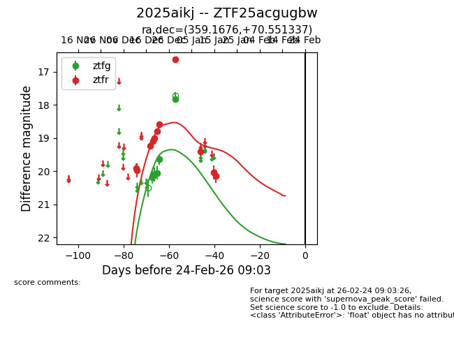
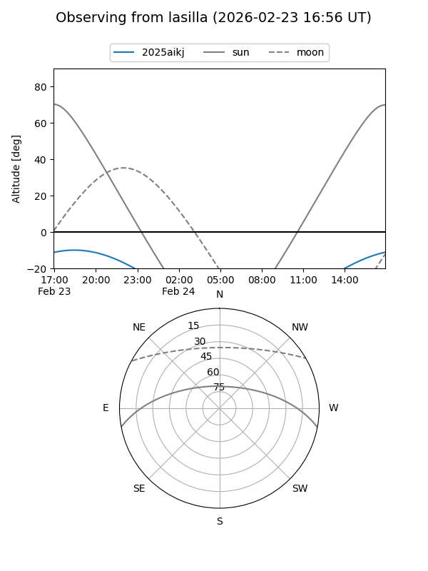
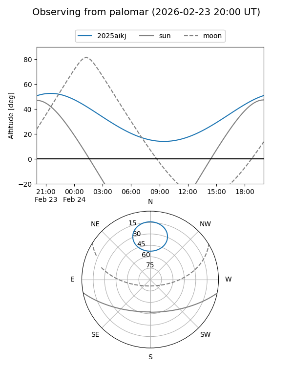
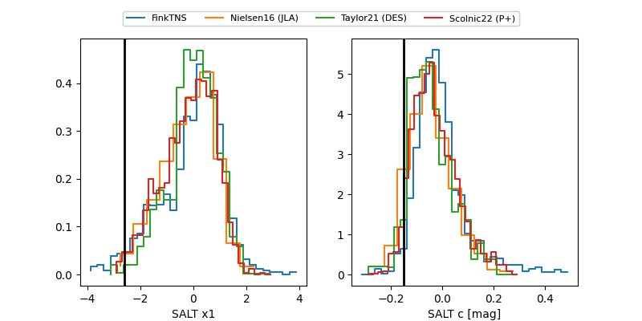

2025aikj
Target 2025aikj at 2026-01-10 10:36
Aliases and brokers:
FINK: link
Lasair: link
ALeRCE: link
TNS: link
YSE: link
alt names
ZTF25acgugbw (ztf,fink_ztf)
2025aikj (tns,yse)
Coordinates:
equatorial (ra, dec) = 359.1676,+70.55134
equatorial (HMS+DMS) = 23:56:40.21,+70:33:04.81
galactic (l, b) = (118.3652,+8.16673)
Flags:
Photometry:
last ztfg=17.83, ztfr=19.41
5 ztfg, 9 ztfr detections
Lightcurve

Visibility


Additional plots
